There are a few obvious changes as soon as you start and view the screen.
There are now 2 toolbars, here seen in a contracted view. The global Toolbar in the upper left corner, activated by clicking it, and the Chart Panel Bar, also called the Canvas Bar, in the lower right corner, activated by clicking the icon with 3 horizontal bars. O5 can, as an option, be used with two different chart panels at the same time, each one with it's own toolbar for panel options.
Note that the previous option to use a simplified scale-bar, now is default. See lower left corner.
More about using two chart-panels later.
The Main Toolbar to the left is similar to the old 4.8 version, with a different look. The idea is that all the settings that changes infrequently are gathered here. Quite a few buttons are gone, and you can now mostly find them in the chart-panels setting options. Gone are the buttons for Zooming, Auto Follow, Vector chart Text, AIS and the tidal buttons.
The Zoom in/out buttons and the autofollow buttons and the AIS button are now in the Chart Panel Bar in the lower right corner. The “Shift to Larger/Smaller Scale Charts” buttons are gone for good.
Buttons for plugins ends up in the Main Toolbar, that expands to two columns, as necessary.
Right clicking on the Main Toolbar enables selection of what icons to show, same as in 4.8
There is no option to revert to the old style Toolbar.
The Chart Panel Bar contains zoom in/out button the chart scale, the Autofollow button and the icon to expand the Chart Panel Options sidebar.
The Autofollow button looks and works differently. There are three different versions of this button, depending on what features that are active.
This is the standard no-follow mode that you will see if Autofollow is not activated. OpenCPN will revert to this mode if Autofollowing is active but you move the chart in such way that Own Ship ends up outside the Chart Panel. In other words, Autofollowing will then be turned off.
This is what you see if Chart Panel Options ? Look Ahead Mode is active. This corresponds to the 4.8 Look Ahead Mode. One difference is that Autofollow will not be turned off if you move the chart with the cursor, as long as Own Ship is still visible. In this case the Own Ship Icon will auto revert to it's original position on the screen.
This mode is a more general version of the old Look Ahead mode. Just Left Click and grab the canvas and move the boat to were you want it on the screen, and it will stay there.
The Chart Panel Options contains well known options, that earlier were found in the different tabs in “Options” or in the Toolbar itself. Note that the former vector chart text button has moved here as an option. See Vector charts ? Show Text. The “Mariner's Standard” vector charts display category has changed name to “User Standard”.
The wrench (spanner) icon is gone and replaced by the standard cogwheel.
Many settings in Options are now moved to the “Chart Panel Options” side bar, with the same function as in the 4.8 releases. There are also a number of new options available.
The Options-Display-General Tab: The “Preserve scale when switching charts” option does not exist in O5 as it is now default behavior.
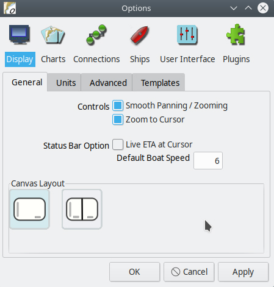
There is a new section called Canvas Layout. This is where you can split the screen in two panels, or canvases. To change to a view where you can see two charts at the same time, just click the split view icon and press “OK”. The chart you were viewing earlier will be in the left panel. The right panel will, to start with, contain a small scale view of the same area using your first chart group, if possible; otherwise the background map. Choose charts for the individual panels the same way as you did in 4.8.
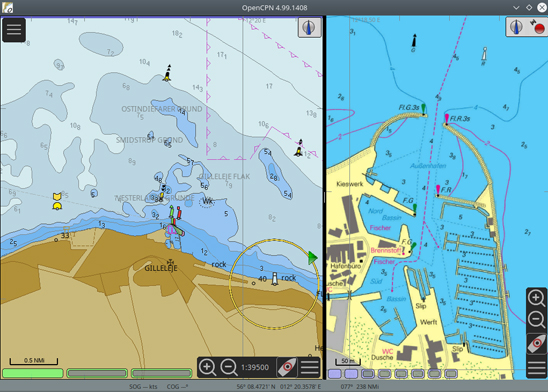
Each Chart Panel has it's own Canvas Bar and all the Chart Panel Options can be set individually for each displayed chart. The size of the two panels can easily be adjusted by just grabbing the black vertical bar between the panels with the cursor + left Click, and move left or right.
There is always an “Active Panel” where, for example, keyboard input works. It is marked by a narrow horizontal blue bar at the top of the panel that is active. To make a panel active, left- or right-click somewhere on the panels canvas. Hitting the “Tab” key will change which panel is active as well.
In multi-canvas mode, the first left-click on an inactive canvas will just change the focus. After that, left-clicks will center the canvas on the click point as usual.
The easiest practical way to change between single and dual panel in an organized way is to use “Templates”. Read on!
Four options are canceled:
* Disable Full Screen Quilting
* Suppress blur/fog effects on overzoom
* Suppress scaled vector charts on overzoom
* Enable Transparent Toolbar is removed. This option is not relevant for V5.0. Use the toolbar AutoHide option instead.
Templates is a new and powerful concept in OpenCPN. There are a lot of options and settings in OpenCPN. Some of these may need changing as your navigation area and conditions change.
Imagine that you have proceeded along the US Intracoastal Waterway – ICW for a few days using vector charts, with adjusted settings for shallow depth, course up display and AIS alarms, just as examples. Heading out through a pass for an overnight offshore passage you find those settings unsuitable and you try to remember what settings you used to have when offshore. Do you remember them all? Have you written them down, or do you have to start from scratch again?
Templates solves the problem and you just have to switch from your “ICW” template to your prepared “Offshore” template as you clear the pass.
This was just an example to get you started. The possibilities are endless.
"<config GUID=" and ends with "/>"
To move a template from computer A to computer B:
1. Copy the "OCPNTemplate-lots of numbers.conf" file in computer A.
2. Paste it into the "Configs" directory on computer B.
3. Copy the templates entrance in the "configs.xml" on computer A. See the highlighted blue area above. Make sure that the entry "templateFile=" is the same as in the name of the file you copied in 1.
4. Paste this template entry into the "configs.xml" on computer B. Make sure to keep the format of the xml file. Do not change the beginning or the end of the file. Be warned - xml is very picky!
5. Restart computer B.
This tab has a new layout and works like this:
The visibility of way-points, including route-points, can now be adjusted to show either always, above a certain chart-scale or never. This will help greatly to decrease clutter when you have a lot of marks.
Old marks and waypoints will be in "always show" mode, as usual, to start with.
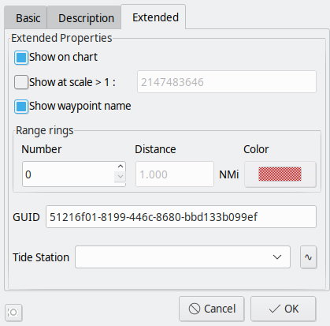
Some news on the waypoint properties “Extended” tab. “Show at scale >1:” is where a minimum scale to show the waypoint is set. The grayed out big number you see is just to show the smallest scale that OpenCPN can accept, and should have no practical implication.
At the bottom of the dialog you can connect the waypoint with a tidal station. Press “v” to see available tidal stations and then “~” to display the tides.
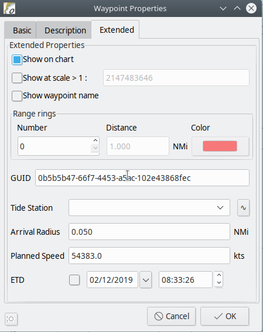
The box GUID contains information for editing gpx files.
Knowing the GUID is good to be able to find a specific object in OpenCPN's GPX data when processed in a text editor.
In routepoint properties, some options are moved from the basic tab to the extended tab, which also includes a few new items described earlier or well known.
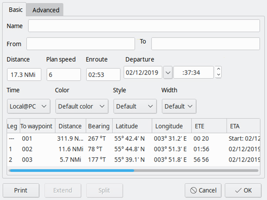
The Route properties dialog has been reworked and expanded with an Advanced tab for a description of the route and for links.
This new tab includes some option that has been moved from other tabs as well as new options.
It is now possible to set the default icons used when creating waypoints and routes.
The 'V' hotkey turns off all waypoints, routes, and tracks on the chart display. For dual display, it will turn these off in the chart display that is active.
In the Routes & Mark Manager Waypoint Tab, the first two columns are about the visibility.
In the “Icon” column you can toggle the visibility by clicking the individual icon.
In the second, “Scale” Column the visibility scale is listed. This value only kicks in if the first column is set to show the waypoint icon.
It is now possible to create a new route via the right-click menu. The same menu also now has the option “Toggle full screen”.
In the console widget that pops up on activating a route...
Clicking on the console cycles between the speed used for the calculations, instead of the original 2 states it now has 4 states:
Current Leg Using SOG to compute TTG
Current Leg Using VMG to compute TTG
Entire Route Using VMG to compute TTG and ETA
Entire Route Using SOG to compute TTG and ETA
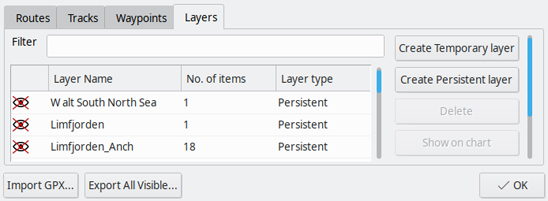
Creating Layers in OpenCPN is now much easier.
A new button "Create Persistent Layer" in the Route & Mark Managers Layers Tab, copies the selected gpx file directly to the correct place.
It's called persistent as it will be available as a layer on restart.
A new column in the dialog tells if a layer is temporary or persistent.
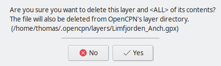
When a Persistent layer is deleted, corresponding file is also deleted from the "layers" folder.
The option “Toolbar and Windows Style” is gone. Only the new default style is available.
Windows user have the ability to edit the “Audio Play Command”, but the default should just work.
The Option “Sound Device Index” is replaced by a list of choices in “Sound Device”.
There could be a few options in Linux while there may just be “Unknown device:0” in Windows.
The defaults should just work in almost all cases.
Grib graphics, like wind arrows, are shown on the right canvas only.
The WMM plugin, displaying world magnetics info, has been updated with latest available data.
Some of the marker icons that come with OpenCPN have been adjusted.
The left east cardinal mark is from a vector chart. The right is a waypoint marker icon. The position of the left marker is at the center of the circle along the baseline. The position of the right marker is now in the same place, even though the circle is absent.
The markers of type "Symbol-Pin-color" and "Symbol-Spot-color" have their position at the sharp point.
All other Standard Waypoint Icons are approximately centered in the middle of the icons.
Many vector charts have built in links to files that come with the chart.
Those files can be text or pictures. For example, it's quite common that inland charts, both US and European, have pictures of bridges.
In 05 these new links will be obvious when doing an Object Query, also called a cursor pick.
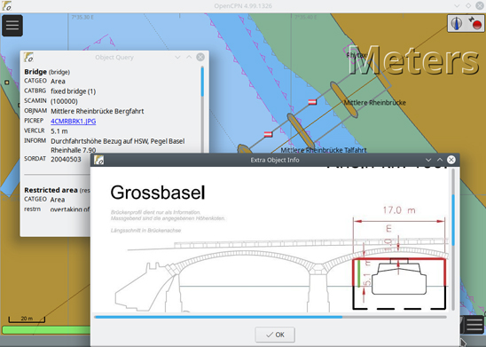
This is from a Swiss inland ENC. Double click on the bridge to get the dialog "Object Query" then click the blue underlined link and get the picture of the bridge.
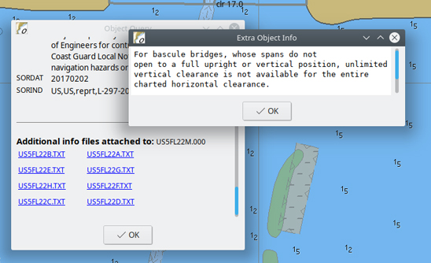
Here is a US example from the Miami area.
Creating SENC charts from vector charts the first time they are used, now happens in the background. The user can continue to use OpenCPN while this happens. The newly processed charts will be directly available when they are ready. During this process the background map changes colors to those of vector charts. Note that only visible charts will be processed.
To process all charts in one go, use Options-Charts-Chart Files-Prepare all ENC charts. No change from 4.8.8.
This warning is very important if you start with an empty chart group. For some reason, it prevents you from seeing any charts. The first response should be to change to a chart group with charts in, for example, "All Active Charts" shortcut "0" (zero).
OpenCPN now supports MBTiles with the .mbtiles file extension and requires that OpenGL is on in Options-Display-Advanced. Trying MBTiles without OpenGL will create a yellow popup warning just above the chart-bar. "MBTile requires OpenGL to be enabled"
MBTiles are colored "Violet" in the chartbar to separate them from other chart formats.
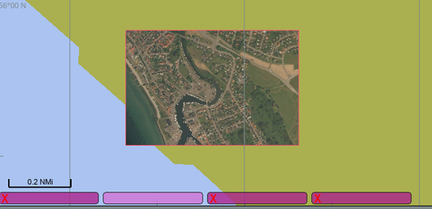
OpenCPN treats the MBTile format different from normal raster and vector charts. MBtiles are NOT fully capable and quiltable charts. They are used as switchable overlays. This is seen as the best compromise considering the unknowable zoom composition and accuracy of tilesets loaded from unknown sources.
MBTiles are shown as switchable overlays to whatever base chart sets are loaded. In the picture above, the background map is the base-map and the MBTiles is a satpic overlay. There are four charts in the chart-bar. All are MBTiles. Three are of a darker shade with a red "X". One is a lighter shade of violet and represents the visible satpic. Left click on a MBTiles piano key is a visibility toggle shortcut. Same effect as Right-click->"hide" on a piano key. Clicking on one of the darker shade buttons makes that MBTile chart visible. The button changes to a lighter shade and the red "X" disappears.
With MBTiles it's advisable to show the charts outline - use the "O" shortcut key. If a chart is not visible, and there is no red "X" on the piano key, zoom in until it's visible.
MBTiles use the Web Mercator projection, with possible quite large errors in geo referencing. In real life these large errors are hard to find.
NOAA has tile-sets available for all their charts. There is however, no good reason to use this service as the tile-set will be much larger than corresponding kap chart sets.
Allow chart source master catalog update from the internet.
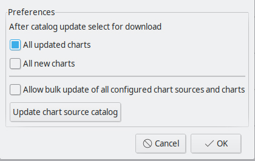
In Options->Plugins->ChartDownloader->Preferences there is a new Button, called "Update chart source catalog". The button allows the user to update the list of support chart catalog. Previously the user had to replace the data file in the install location.
The column order, in the AIS target list dialog, will now be saved and reloaded in the same way as the column width.
Waypoints created from the AIS target list dialog, will now have a useful name, consisting of target name, MMSI number and a time stamp.
Enhancements to the AIS and DSC handling as requested by SAR services:
Higher baud rates are now available for all architectures.
This means that OpenCPN is now available for a range of new electronics.
A depth offset feature is now available in the Dashboard.
The Grib plugin uses only the right pane if opened multi-canvas mode.